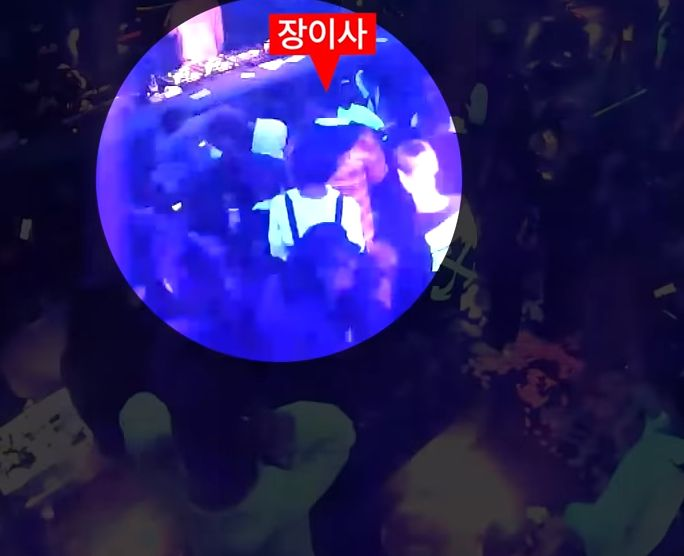
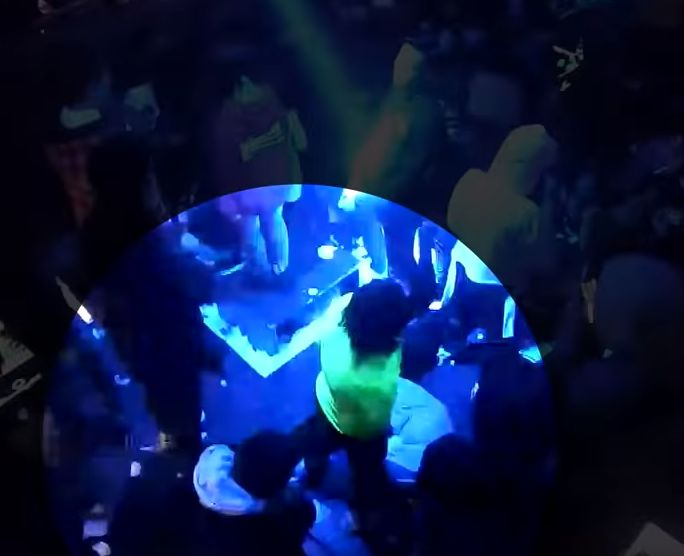
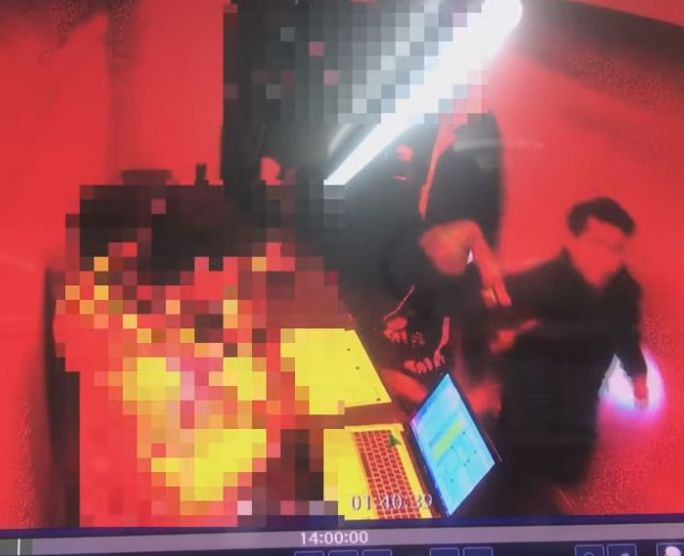

<!DOCTYPE HTML>
<html>
<head><meta name="generator" content="Hexo 3.8.0">
  <meta charset="utf-8">
  
  <title>승리 버닝썬 폭행사건 | 사건사고</title>
  <meta name="author" content="Detective">
  
  <meta name="description" content="It&#39;s a blog that deals with incidents all over the world.">
  
  
  <meta name="viewport" content="width=device-width, initial-scale=1, maximum-scale=1">

  <meta property="og:title" content="승리 버닝썬 폭행사건">
  <meta property="og:site_name" content="사건사고">

  
    <meta property="og:image" content="">
  

  
    <link rel="alternative" href="/atom.xml" title="사건사고" type="application/atom+xml">
  
  
    <link href="/favicon.png" rel="icon">
  
  
  <link rel="stylesheet" href="/css/bootstrap.min.css" media="screen" type="text/css">
  <link rel="stylesheet" href="/css/font-awesome.css" media="screen" type="text/css">
  <link rel="stylesheet" href="/css/style.css" media="screen" type="text/css">
  <link rel="stylesheet" href="/css/highlight.css" media="screen" type="text/css">
  <link rel="stylesheet" href="/css/google-fonts.css" media="screen" type="text/css">
  <link rel="stylesheet" href="/css/responsive.css" media="screen" type="text/css">  
  <link rel="stylesheet" href="/css/sidenav.css" media="screen" type="text/css">  
  <!--[if lt IE 9]><script src="//html5shiv.googlecode.com/svn/trunk/html5.js"></script><![endif]-->

  <script src="/js/jquery-2.0.3.min.js"></script>

  <!-- analytics -->
  
<script type="text/javascript">
var _gaq = _gaq || [];
_gaq.push(['_setAccount', 'UA-134544461-1']);
_gaq.push(['_trackPageview']);
(function() {
var ga = document.createElement('script'); ga.type = 'text/javascript'; ga.async = true;

ga.src = ('https:' == document.location.protocol ? 'https://' : 'http://') + 'stats.g.doubleclick.net/dc.js';

var s = document.getElementsByTagName('script')[0]; s.parentNode.insertBefore(ga, s);
})();
</script>


  <!-- hexo-auto-canonical -->
  <link rel="canonical" href="http://gandol1028.github.io/celebrity/celebrity/victoryburningsun/">


  <!-- google ads -->
  <script async src="//pagead2.googlesyndication.com/pagead/js/adsbygoogle.js"></script>
  <script>
    (adsbygoogle = window.adsbygoogle || []).push({
      google_ad_client: "ca-pub-1646184257803831",
      enable_page_level_ads: true
    });
  </script>

</head>
</html>
<body id="body" data-spy="scroll" data-target=".toc">
  <div class="container" id="container">
	<div class="content">
	  <div class="page-header">		
  <h1>
	  <a class="brand" href="/">사건사고</a>
	  <span class="split"></span>
	  <span class="title">승리 버닝썬 폭행사건</span>
	  <!--<span class="date" id="title-date"><i class="fa fa-clock-o"></i> 2019-01-14</span>-->
  </h1>
</div>		

<div class="row page">
  <!-- cols -->	
  
  

  
	<div class="col-md-12">
	  

	  <!-- content -->
	  <p>클럽 <strong><em>버닝썬</em></strong>에서 마약 유통책으로 활동했다는 의혹을 받은 중국인 여자분이 빅뱅 빅뱅의 승리와 함께찍은 사진과 동영상이 다수 공개됐습니다. 이 여자분은 자신의 SNS에서 자신이 클럽 버닝썬에서 일한다고도 밝혀 파문이 일어났습니다.</p>
<p></p>
<p>지난 십삼일 자신이 지난해 십일월 발생한 <strong><em>버닝썬 폭력 사건</em></strong> 피해자라고 주장 중인 김모씨는 자신의 SNS에 빅뱅의 승리와 중국인 여자분 <strong><em>애나</em></strong>가 함께 찍은 동영상 캡처사진을 게재했습니다. </p>
<p>자신의 닉네임을 <strong><em>애나</em></strong>로 밝힌 이 여자분은 지난해 10월 빅뱅의 승리와 함께 클럽 버닝썬에서 찍은 것으로 추정되는 동영상을 자신의 SNS에 게재했는데,<br>사진과 함께 게재한 글에는 </p>
<blockquote>
<p>“열심히 일해야 빅뱅의 승리 대표와 사진을 찍지. 이번 주 취했다가 열일”</p>
</blockquote>
<p>이라면서 빅뱅의 승리를 버닝썬의 대표라고 언급하고 있습니다.</p>
<p><strong><em>애나</em></strong>는 앞서 버닝썬 내에서 마약류인 알약 공급책으로 활동하는 동시에 MD로 일하며 버닝썬에 중국계 손님들을 유치하는 일을 해왔다고 알려 지고있습니다. </p>
<p>이외 에도 일부 언론매체의 보도에 따르면 김 씨를 클럽 내 성추행으로 고소한 여자분 2명 중 한 명이 <strong><em>애나</em></strong>였던 것으로 전해졌죠. </p>
<p>김 씨는 버닝썬 측이 클럽 내 마약 유통에 대해 부인한 것을 꼬집는 의도로 이 사진을 게재한 것으로 보여집니다. 이 사진은 현재 지워졌습니다.</p>
<p></p>
<p>MBC <strong><em>뉴스데스크</em></strong> 보도에 따르면 <strong><em>애나</em></strong>는 중국 국적의 여상 파모씨로 8년 전 서울의 한 대학 연기학과에 외국인 전형으로 입학해 지난해 졸업했습니다. </p>
<p>같은 해 대마초 혐의로 기소유예 처분을 받은 이력도 있으며, 현재 여권이 만료돼 불법체류 상태인 것으로 전해 지고있습니다. </p>
<p>경찰은 십삼일 <strong><em>애나</em></strong>를 조사할 계획이지만 아직까지 이 여자분과 연락이 닿고 있지 않다고 밝혔죠.</p>
<p>앞서 버닝썬 대표에서 사임한 빅뱅의 승리 또한 <strong><em>애나</em></strong>와의 친분을 부인했습니다.<br>이 동영상에 관해 빅뱅의 승리는 </p>
<blockquote>
<p>“클럽에 있다가, 함께 사진을 찍어달라고 하시기에 찍어드린 것”</p>
</blockquote>
<blockquote>
<p>“사진을 찍은 시점이 정확하게 언제인지, 저 분이 어떤 분인지 잘 기억이 나질 않을 정도”</p>
</blockquote>
<p>라고 친분을 부인 했습니다.</p>
<p></p>
<p>하지만 빅뱅의 승리에게 도의적 책임은 여전히 존재한다는 의견이 대세입니다. 앞서 빅뱅의 승리 측은 버닝썬 폭력, 성추행, 마약 유통 논란에 관해</p>
<blockquote>
<p>“실제 운영에는 관여하지 않았다”</p>
</blockquote>
<p>라고 밝힌 바 있습니다.그러나 MBC <strong><em>나 혼자 산다</em></strong>등을 통해 자신이 직접 클럽을 운영한다고 강조하고, 이를 통해 클럽 홍보에 일조한 것은 분명한 사실입니다. 대중들은 이에 관해</p>
<blockquote>
<p>“연예인이 자신의 이름을 내걸고 지상파 방송 속에서 대대적으로 홍보했으니 안심하고 클럽에 갔다가 피해를 본 사람도 있을 것”</p>
</blockquote>
<p>이라며 </p>
<blockquote>
<p>“클럽의 유명세에 일조한 이상 빅뱅의 승리가 도의적으로 책임져야 하는 부분은 분명 있다”</p>
</blockquote>
<p>고 지적했습니다.</p>
<p>이제 와서 </p>
<blockquote>
<p>“운영에는 관여하지 않았다”</p>
</blockquote>
<blockquote>
<p>“친분이 없는 사람” </p>
</blockquote>
<p>등의 변명으로 일관하는 모습이 실망스럽습니다.</p>
<p>분명 운영하지 않았을 수 있습니다. <strong><em>애나</em></strong>도 모르는 사람일 수 있습니다. </p>
<p>하지만 그가 돈을 투자하고, 빅뱅의 승리의 어머니가 감사로 재직했고, 직원들이 빅뱅의 승리를 대표라고 불렀으며 빅뱅의 승리 자신이 방송에서 실제로 운영하고 있다고 말한 것은 사실입니다.<br>그렇다면 빅뱅의 승리의 태도에 대중들이 실망하는 것도 감수해야 하지 않을까요.<br>그가 속한 그룹 빅뱅의 히트곡 <strong><em>루저</em></strong> 가사 속 <strong><em>센척하는 겁쟁이, 못된 양아치</em></strong>라는 부분이 유난히 씁쓸하게 맴돕니다. </p>
	  

	  <div>
  		<center>
		  <div class="pagination">
<ul class="pagination">
	
	
	
	
	
	
		
	
		
	
		
	
		
	
		
	
		
	
		
	
		
	
		
	
		
	
		
	
		
	
		
			
			
		
	
	
	<!--
		<li class="prev disabled"><a><i class="fa fa-arrow-circle-o-left"></i>prev</a></li>
	-->
	<li><a href="/"><i class="fa fa-archive"></i>Home</a></li>
	<!--
		<li class="next disabled"><a>next<i class="fa fa-arrow-circle-o-right"></i></a></li>
	-->
</ul>
</div>

		</center>
	  </div>
	  
	</div> <!-- col-md-9/col-md-12 -->
	
  </div><!-- row -->

	</div>
  </div>
  <div class="container-narrow">
	<footer> <p>
        © Copyright 2012-2019 Detective
  
    
</p> </footer>
  </div> <!-- container-narrow -->
  
<a id="gotop" href="#">   
  <span>▲</span> 
</a>

<script src="/js/jquery.imagesloaded.min.js"></script>
<script src="/js/gallery.js"></script>
<script src="/js/bootstrap.min.js"></script>
<script src="/js/jquery.tableofcontents.min.js"></script>
<script src="/js/tocgenerator.min.js"></script>
<script src="/js/main.js"></script>
<script src="/js/search.js"></script> 


<link rel="stylesheet" href="/fancybox/jquery.fancybox.css" media="screen" type="text/css">
<script src="/fancybox/jquery.fancybox.pack.js"></script>
<script type="text/javascript">
(function($){
  $('.fancybox').fancybox();
})(jQuery);
</script>


   <script type="text/javascript">      
     var search_path = "search.xml";
	 if (search_path.length == 0) {
	 	search_path = "search.xml";
	 }
	 var path = "/" + search_path;
     searchFunc(path, 'local-search-input', 'local-search-result');
   </script>


</body>
</html>
